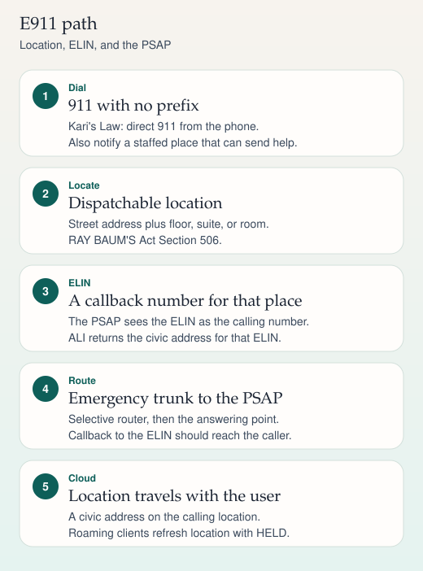

Kari's Law · RAY BAUM
Emergency call
A connected 911 call with the wrong location is a failed emergency call.
- 911 — Direct dial. Kari's Law does not allow a prefix to be required.
- Route — CER, or the cloud location service, selects the ELIN or the dispatchable location.
- INVITE — The calling number the PSAP sees must be the one that maps back to this site.
- Notify — On-site notification is a separate duty from completing the call.
Callback that rings a headquarters receptionist failed the location, even though the first call connected. Test 933 where the carrier provides it, and keep 911 tests on the procedure your carrier allows.
Sources
Study card carried forward
Emergency calling
E911 design
This card is the engineering shape of U.S. multi-line 911: direct dial, notification, a dispatchable location, and a callback number the PSAP can use. It is a study aid, not a legal opinion.

On a phone, swipe a wide ladder sideways. The steps below repeat the same sequence.
Kari's Law
Kari's Law applies to multi-line telephone systems. Two duties are the ones a voice engineer designs for:
- Direct dialing. A person can dial 911 without a prefix or an outside-line digit.
- Notification. When 911 is dialed, the system notifies a central place (on site or off site) that can send help. The notice includes a callback number and the location information that is available at the time.
A route pattern for 911 that sits in a partition every calling search space can reach is the usual CUCM expression of the first duty. Keeping 9-911 as a translation to 911 helps people who still dial a prefix. The prefixed habit does not satisfy the law by itself. 911 alone must work. Applicability, manufacture dates, and installation dates are legal questions. Confirm them in the statute and the FCC's current rules. This page is not a compliance opinion.
RAY BAUM'S Act Section 506
Section 506 is about dispatchable location: the street address of the caller, plus extra detail such as floor, suite, apartment, or room, so responders can find the person. A building name with no civic address is not enough. A campus subnet label is not enough unless it is tied to that civic detail and delivered with the call.
The FCC phased the dates and distinguished fixed on-premises devices, movable on-premises devices, and off-premises devices. Use the current FCC MLTS rules for which deadline and which information apply. Do not take a study card as the calendar.
ELIN, ERL, ALI, PSAP
| Term | Meaning |
|---|---|
| PSAP | Public Safety Answering Point. The call center that answers 911. |
| ERL | Emergency Response Location. A zone that shares one dispatchable location, such as a floor wing. |
| ELIN | Emergency Location Identification Number. A NANP number from your inventory that represents that ERL. The PSAP sees it as the calling number. |
| ALI | Automatic Location Identification. The database the PSAP queries to turn the ELIN into a civic address. |
| ANI | The calling number presented with the call. For these designs, that number is often the ELIN, not the employee's normal DID. |
Give a busy ERL more than one ELIN so two overlapping 911 calls do not have to share a single callback identity. Callback to the ELIN, during a defined window, should reach the phone that placed the call rather than a random phone in the same zone. Cisco Emergency Responder is one on-premises product that discovers phones (switch port, subnet, wireless access point), maps them to ERLs, substitutes the ELIN, and tracks that callback.
On premises and in the cloud
| On premises | Cloud calling | |
|---|---|---|
| How you learn the place | Switch port, IP subnet, wireless access point, or a manual assignment. | A civic address stored on the calling location, plus a client that may ask the network. |
| What the PSAP receives | ELIN as the calling number, then an ALI lookup. | The provider is expected to send a dispatchable location with the call. The callback number follows that provider's design. |
| A soft client that left the building | Discovery often still says "the office" if the client VPN lands in an office subnet. Treat that as a known gap. | The client should refresh location. HELD (RFC 5985) is the usual query to a Location Information Server. The answer is PIDF-LO (RFC 4119, civic form in RFC 5139). |
| Staff notification | A parallel alert from the emergency responder system or from CUCM. | Use the cloud service's notification feature and prove it reaches a staffed place. Do not assume the on-premises alert still fires after cutover. |
During a migration, a Local Gateway can keep 911 on a premises trunk that already delivers a correct ELIN and ALI record. That is a valid interim design. It is not automatic. After you remove the trunk, the cloud path has to carry location on its own.
Test with the provider's published test number. In the United States that number is often 933, and a correct test does not dispatch responders. Confirm the code before you use it. Do not place a live 911 call as a lab exercise.
Sources
- Kari's Law (direct 911 dialing and notification for multi-line telephone systems)
- RAY BAUM'S Act, Section 506 (dispatchable location)
- FCC rules implementing those statutes for MLTS
- RFC 5985, HTTP-Enabled Location Delivery (HELD)
- RFC 4119, PIDF location object, and RFC 5139, civic addresses
- Cisco Emergency Responder documentation, for the on-premises discovery and ELIN callback behavior